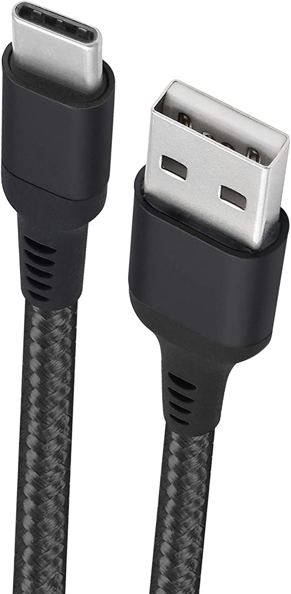

Especificações:
Fone de ouvido com 1,2 metros de comprimento,
para o conforto da geometria da orelha,
microfone em linha e botão para facilitar a conversa.
Cor: Branco
Cabo USB-C
Foto do acessório

Modelo: Cabo USB-C (tipo C) para USB
Especificações: USB tipo A, USB tipo C.
Compatível com smartphones
e tablets compatíveis com o padrão USB-C.
Nylon trançado, 1 metro.